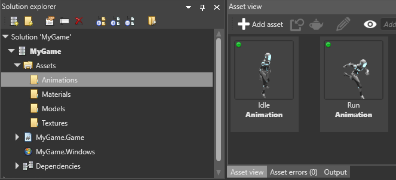

アニメーション プロパティ
初級 デザイナー
アニメーションをインポートした後は、［Asset view］(既定では下部のペイン) でそのアニメーションを選択し、［Property grid］(既定では右側) でそのプロパティを表示および編集できます。


Source
これは、アニメーション アセットによって使用されるソース ファイルです。これを変更すると、アニメーションが再インポートされます。
Clip duration
既定では、クリップ期間は無効になっています。つまり、アニメーションはフレーム 0 で開始し、ファイルに書き込まれている最後のキーフレームまで実行します。
ただし、1 つのアニメーション トラックに複数のアニメーションが含まれることがあります。その場合は、トラックを分割する必要があります。そのためには、［Clip duration］を有効にして、各アニメーションの期間と一致するように開始フレームと終了フレームを調節します。
その場合でも、開始フレームと終了フレームは、ファイルにエクスポートされたキーフレームによって制限されます。たとえば、最初にアニメーション ツールからフレーム 20 ～ 40 をエクスポートした場合、開始フレームを 20 より小さくすることはできず、終了フレームを 40 より大きくすることはできません。
Game Studio の既定のフレーム レートは 30 です。この値は、［Game settings］アセット プロパティの［Editor settings］>［Animation frame rate］で変更できます。
Pivot Position
Game Studio では、ピボットはアニメーションのローカル座標系の原点と見なされます。(0, 0, 0) に設定されている必要があります。エクスポートしたときにアニメーションが原点からシフトした場合、このプロパティを使用して再調整できます。
Scale Import
［Scale Import］は 1 に設定する必要があります。Stride はデータがエクスポートされた単位を検出し、自動的にそれを調整します。アニメーション ファイルにエクスポートの設定がなく、スケールが正しくないように見える場合は、［Scale Import］プロパティを使用して再調整できます。
Repeat Mode
［PlayOnce］、［LoopInfinite］、[PlayOnce&Hold］を選択できます。これは、エンジンに対する単なる ヒント です。アニメーション アセットをモデルに割り当てるときに、異なる値を指定できます。後でモデルを指定しないと、Stride はここで設定されている属性を既定で使用します。
Type
Stride は 2 種類のアニメーション クリップをサポートします。通常のアニメーションは既定で［Animation clip］になり、混合される場合はリニア ブレンディングで使用されます。［Difference clip］の場合は、さらにいくつか設定があります。詳細については、「加算アニメーション」を参照してください。
Skeleton
スキン メッシュでアニメーションを使用する場合は、スケルトンが必要です。アニメーション化するモデルで使用されているものと同じスケルトンを参照する必要があります。足りないボーンがある場合、またはアニメーション ファイルのスケルトンのノード階層とターゲット スケルトンの間に違いがある場合は、可能な限り一致するようにアニメーションが再ターゲット設定されます。
Root Motion
［Root Motion］を有効にすると、メイン モーションが TransformComponent に適用されます。無効にすると、スケルトン ノードの内部で適用されます。
Note
スケルトンがない場合は、モーションは TransformComponent に常に適用されます。